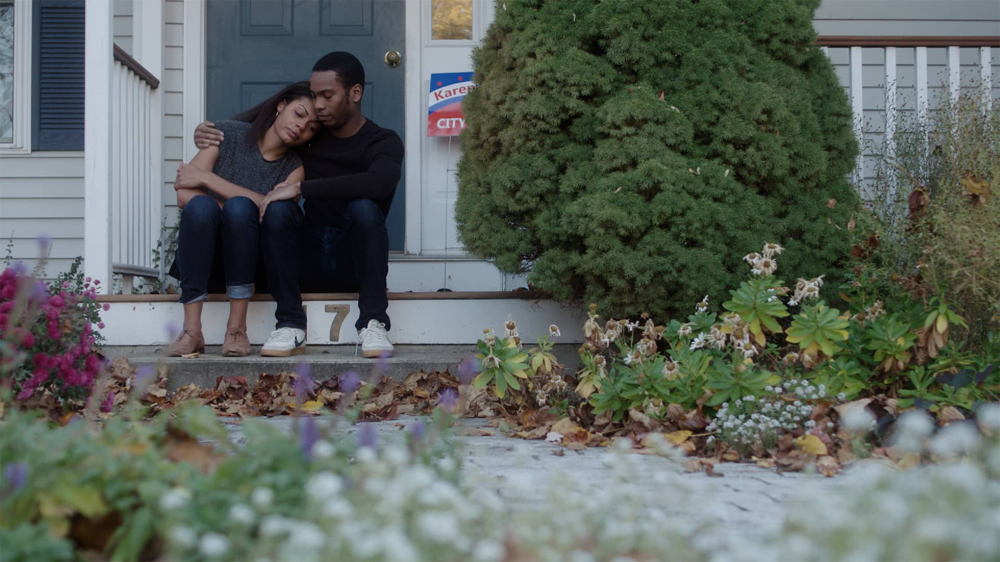
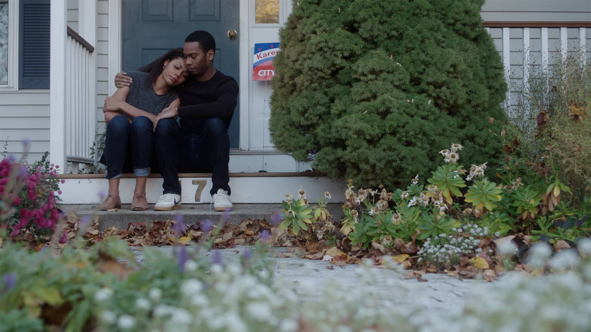

GRANT JOHNSON / cinematographer
Stella With The World on Her Shoulders
(TV Pilot, 2016)
Stella is a 30-minute television pilots produced through NYU’s Advanced Television program.
Camera: Sony F5
Lenses: Zeiss Compact Prime CP.2’s
 Back to Films
Back to Films
 
